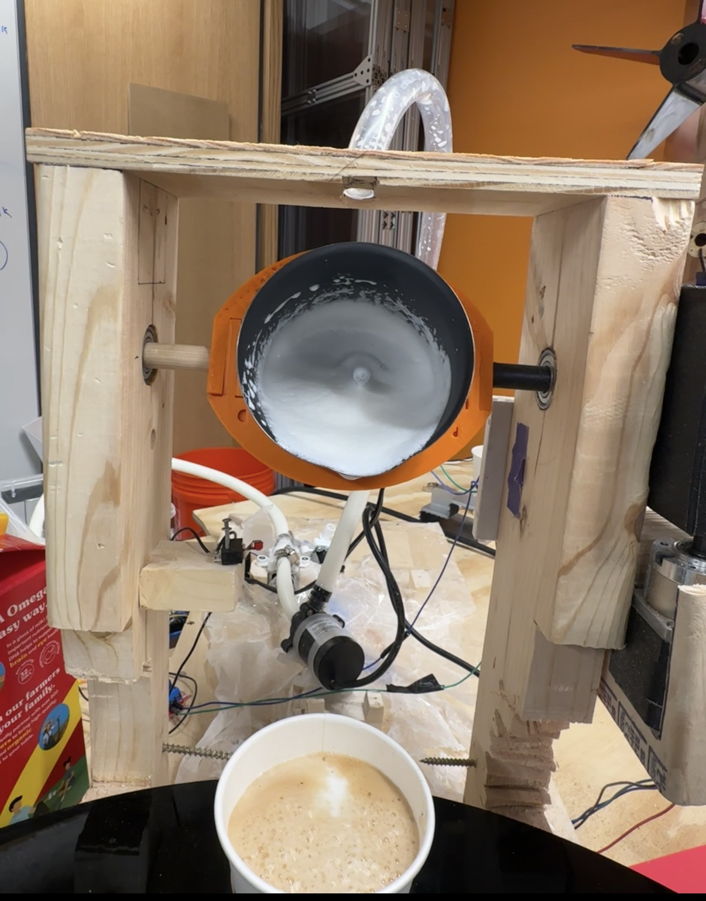
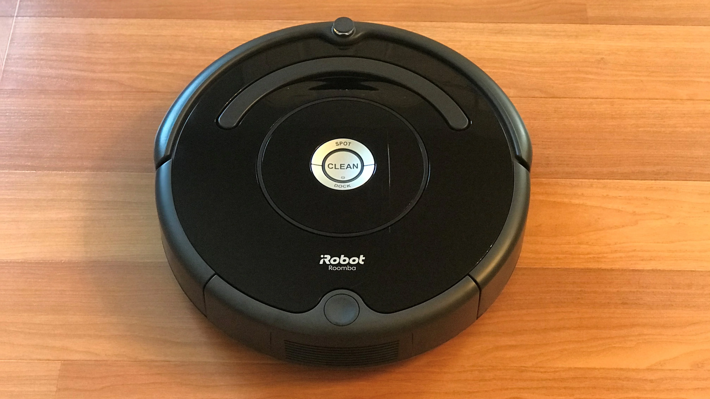
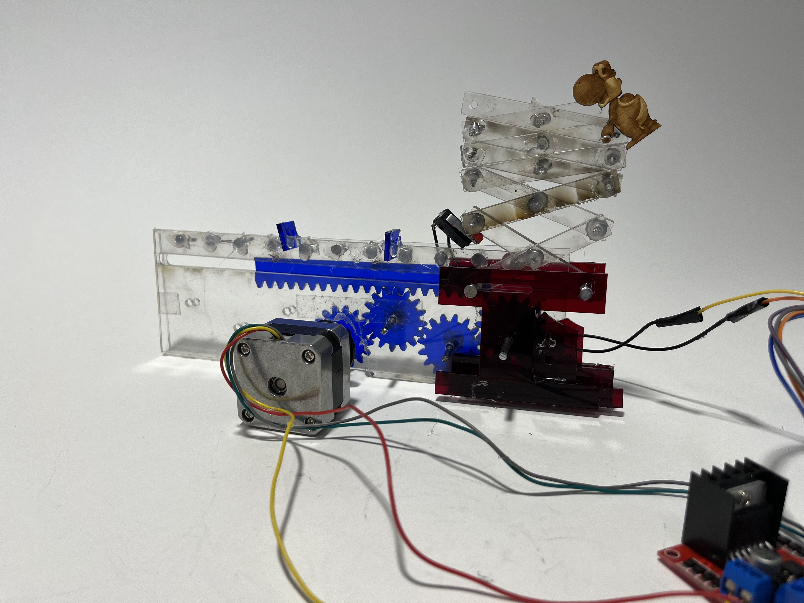

SociaLIGHT
Wearable system using glanceable cues to influence social interaction.
Mailbox System
ESP-based pairing system using RSSI to link physical objects.
Wearable Study
Behavior analysis of interaction patterns in group settings.

Robotic Café
Automated milk frothing subsystem for a multi-team robotic café — peristaltic pump, worm gear tilt control, and hardwired frother.

Object Recognition Navigation
Autonomous maze navigation using Teachable Machine object classification and real-time ROS2 motion control.

Airtable Remote Navigation
Cloud-based robot control using Airtable as a command interface with ROS2 for real-time remote navigation.

Vision-Based Line Following
Camera-driven autonomous robot navigating a colored maze using OpenCV contour detection and centroid tracking.

Line-Following Robot
Autonomous robot navigating a colored maze using real-time color sensing and differential drive control.

Flagpole Scissor Linkage
Rotary-to-linear motion system using a stepper motor, gear train, and scissor linkage for vertical extension.

Involute Gears
Stepper motor–driven gear reduction system animating a Mario character through a 90-degree jump sequence.